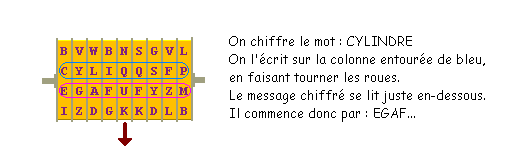
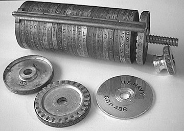

Le cylindre de Jefferson

Thomas Jefferson, vers 1793, alors qu'il était secrétaire d'état de Georges Washington, et futur Président des Etats-Unis, avait conçu un instrument très ingénieux afin d'envoyer de petits messages codés dans le cadre d'opérations militaires "sur le terrain". Le cylindre de Jefferson consiste en une série de 25 ou 26 roues, emboîtées le long d'un axe fixe, et pouvant tourner indépendamment les unes des autres par rapport à cet axe. Sur chaque roue, on trouve les 26 lettres de l'alphabet, mais écrites dans un ordre quelconque (jamais le même pour chaque roue).
Pour chiffrer le mot CYLINDRE, on fait tourner les roues de sorte de faire apparaitre ce mot sur une ligne devant nos yeux. Puis on choisit une autre ligne, par exemple celle juste en-dessous, et on envoie la série de lettres qui s'y trouve.
Le destinataire, qui a reçu EGAFQYOR, écrit ce mot sur une des lignes du cylindre qu'il a en sa possession (il doit être exactement identique à celui de l'expéditeur), et recherche sur une autre ligne à quel message clair cela peut correspondre. Il s'agit bien d'une substitution polyalphabétique, car sur chaque roue les alphabets sont différents, et si A est suivi par F sur la première roue, il peut très bien être suivi par H sur la deuxième roue.
Jefferson abandonna l'utilisation de ce cylindre dès 1802. Plusieurs années plus tard, il fut réinventé par le colonel français Bazeries en 1891, mais les autorités françaises refusèrent son utilisation, puis par le colonel italien Ducros en 1900. L'armée américaine elle-même réinventera une sorte de cylindre de Jefferson, le M-94 (aussi appelé CSP-488 par la marine, ou CSP-493) par les garde-côtes. La marine l'utilisa même jusqu'au milieu des années 1960! C'est le M-94 dont le programme précédent simule le fonctionnement.
Sur la photo de l'exemplaire précédent, on voit que les disques sont montés sur un axe et retenus par un écrou moleté. On peut donc facilement en changer l'ordre. La clé de chiffrement est l'ordre selon lequel on dispose ces disques. Avec 26 disques on a quand même 26! combinaisons, soit plus de 4× 1026. Cet appareil ne craint pas la poussière, la boue ou la pluie ... c'était ingénieux pour une utilisation en première ligne, d'autant que sa manipulation est aisée pour des non-spécialistes. Enfin, lorsqu'on chiffre un long message, on utilise plusieurs fois le cylindre, mais on ne prend pas toujours le message chiffré sur la même ligne. L'algorithme utilisé est donc différent pour chaque portion, ce qui complique la cryptanalyse.
Voici la description que fait Jefferson lui-même dans ses papiers que l'on a retrouvé en 1922 dans la bibliothèque du congrès (source : La guerre des codes secrets, par D. Kahn).
Confectionnez un cylindre de bois blanc d'environ deux pouces de diamètre et six à huit pouces de long. Percez en son axe un trou suffisant pour recevoir une broche d'un huitième ou d'un quart de pouce de diamètre. Divisez le pourtour en 26 parts égales (pour les 26 lettres de l'alphabet) et, avec un poinçon, tracez des lignes parallèles, d'un bout à l'autre du cylindre, à partir des points de division. Tracez ces lignes avec de l'encre pour les rendre plus apparentes. Puis, découpez le cylindre en disques d'environ un sixième de pouce d'épaisseur. Ils ressemblent à des jetons de jacquet. Numérotez chacun d'eux sur une des faces, de façon à pouvoir les assembler dans n'importe quel ordre que vous aurez choisi. Sur le pourtour de chaque disque et entre les lignes noires, inscrivez les lettres de l'alphabet, non dans l'ordre normal, mais en désordre, de façon à ce qu'il n'y ait pas deux disques semblables. Assemblez-les maintenant dans l'ordre que vous avez choisi, sur l'axe de fer dont l'une des extrémités a une tête et l'autre un filetage et un écrou permettant de les maintenir fermement. L'appareil est maintenant prêt à l'emploi, votre correspondant ayant un cyclindre semblable semblablement disposé.
Supposez que vous ayez à chiffrer la phrase : "Bien reçu votre lettre du 22".
- tournez le premier disque pour faire apparaître le B,
- tournez le second disque pour amener le I sur la même ligne que le B du premier disque,
- tournez le troisième disque pour amener le E sur la même ligne que le I du second disque,
- tourner le quatrième disque pour amener le N sur la même ligne que le E du troisième disque,
et ainsi de suite jusqu'à ce que vous ayez tous les mots de la phrase en ordre sur une ligne. Bloquez les disques avec l'écrou. Vous observez alors que le cylindre présente 25 autres lignes dont les lettres sont rangées non en suite logique, mais de façon incohérente, sans ordre ni signification. Copiez l'une quelconque de ces lignes dans la lettre à votre correspondant. Quand il la reçoit, il prend son cylindre et arrange les disques de façon à avoir sur une même ligne les lettres incohérentes dans le même ordre. Il bloque le tout avec l'écrou, et, en examinant les 25 autres lignes, il trouvera l'une d'elles présentant ces mots : "Bien reçu votre lettre du 22", qu'il notera. Comme les autres lignes sont incohérentes et dépourvues de signification, il ne peut se tromper sur celle qui lui est réellement destinée. Procédez ainsi avec chacune des autres portions du message. Les nombres sont de préférence représentés par des lettres surmontées d'un point, par exemple les six voyelles et les quatre consonnes liquides, car si le pourtour comptait 36 divisions au lieu de 26 (pour inclure les chiffres en plus des lettres), cela accroîtrait la difficulté de repérer les lettres sur les disques.
Pour un ensemble donné de disques avec leurs alphabets désordonnés, on peut reproduire une très grande variété de chiffrements pour des correspondants différents, en changeant seulement l'ordre des disques du cylindre, car si vous faites le produit de tous les nombres compris entre 1 et le nombre de disques (quel qu'il soit), le résultat donnera le nombre de rangements possibles, donc de clés de chiffrement utilisables avec des correspondants différents, celle de chacun étant inintelligible pour tous les autres...